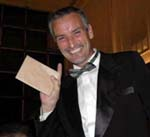
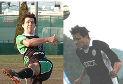

|
YC&AC, Sat 25th March. Tokyo’s’ footballing establishment has been rocked to its very foundations by allegations of corruption endemic at its very highest levels. None other than self proclaimed Football Godfather, Slithering Sid Lloyd, 53, the TML’s Dictator for Life, Head of its Supreme Council and Senior Assistant Manager, is facing match fixing charges which, if proven, could result in the death penalty or a weekend at Joe Takeda’s house.
It is understood that lesser charges of impersonating a centre forward have been dropped through lack of evidence after witnesses at a Clash game recently agreed that Lloyd, 57, was in no danger of fooling anyone.
|
|
Police getting ready to raid the Sala Bar
|
Tokyo Prosecutors allege a pattern of events over 2 of the last 3 TML seasons which, they say, will prove that Lloyd, 59, colluded with the Hibs and Sala teams to make sure that the Hibs snuck off with the League title from under the noses of more deserving rivals the Swiss Kickers and YCAC, respectively
“We first became suspicious in late Spring 2004 when those nice Swiss Boys got lost on their way to the Sala ground thereby forfeiting the match and the title” said Bozo McKoban, one of Saitamas finest and a member of the growing community of illegitimate 1/2 Scots-1/2 Japanese living in the vicinity of the Sala, a notorious S&M Bar out in the sticks someplace.
|  |
|
Mystery Man Del gets Hibs brown envelope
|
“Of some interest to us” said Bozo “ was the discovery at the Sala Bar of a consignment of defective car navi units supplied by Del Trotter, 74, of Trotters Independent Trading, Peckham. We are concerned that 1 of the units is missing and may have got into the wrong hands. Anyone keying in the Sala pitch, for example, would be sent around in circles for some time”
The Police have so far failed to confirm a connection between Trotter and Lloyd, 82, but are investigating the recent appearance of Trotter at a Hibs team party where he was honored for services to the team
Tokyo Prosecutors are also keen to interview Sala and Hibs captains Guido and Bevan. Bozo McKoban is certain that they are one and the same man. “Bevan thinks that not combing his hair will throw us off but our experts are sure that it’s Guido. Has anyone actually ever seen them in the same room together? We want Guido to explain the unexplainable, i.e. Salas results against the Swiss and, especially, YCAC (4 wins and a draw in 5 games) and those against “Bevan’s” team, the Hibs. (Not a single point and a 0-10 thrown in for good measure). Experts in the know say that the surprise is, with the Keeper Sala has, that there are not more 0-10s, but I’m not buying it”
|  |
|
Is this the same man????
|
2 reporters deep under cover collecting the evidence to put Lloyd, 97, away have met with convenient mishaps as they closed in on the scoop. First ST asked the wrong question to the wrong man and had his leg broken in a spurious cup game hastily arranged by Lloyd, 104. Then his intrepid colleague, JT, getting uncomfortably close to the goods was banished from the scene on trumped up charges after tangling with one of Lloyds’ heavies, Ricky the Ref, in an even phonier tournament
This story has legs and will run. In fact a gloves off version may appear should Sala yet again fail to beat Hibs in the latter stages of the TML and then go on to beat the Swiss or YCAC in the FJCup Final
Reporter: Steve Taw.
|